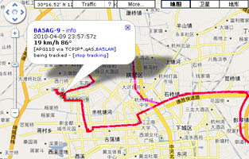
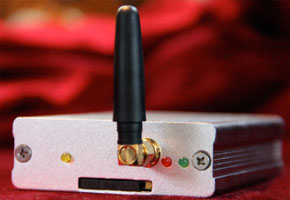
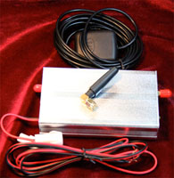

|
APRS Box G8201是一个业余电台的APRS网络的移动位置报告终端。它使用移动运营商的GPRS网络向APRS系统报告实时位置数据。
APRS Box将GPS和GPRS移动数据网相结合，在车辆上安装的APRS Box，可以接收到精确的时间、经纬度、速度、方向等信息，实时地把这些信息通过移动通信网络发送到互联网上的APRS服务器。在各个APRS网站上就可以看到车辆的实时位置、最近轨迹、速度等信息，还可以查询车辆的历史轨迹。
|
APRS Box具有以下主要特点：

- 信号覆盖范围大，在中国移动的GPRS网络覆盖范围内都可以跟踪到车辆，不受业余数字中继覆盖范围的限制，使用支持国际漫游的移动号码时可以在全世界跟踪；
- 传输容量大，不受业余数据1200bps单信道限制，一定区域内可以容纳更多设备同时工作；
- 使用GPRS数据方式发送数据，不仅传输速度快，而且可以享受中国移动的数据包月资费，降低运行费用；
- 支持多服务器自动切换，可靠性高；
- 车载终端设备体积小巧，只有烟盒大小；
- 车载终端功耗低，可以接在点火开关之前，即使不点火也正常工作。
|
APRS Box G8201的技术指标如下：
- GPS性能：
- 结构：20通道，L1波段(1575.42MHz)，C/A码(1.023MHz码片速率)
- 灵敏度：-160dBm超强跟踪灵敏度
- 跟踪能力：同时跟踪16颗卫星
- 捕获时间：热启动1秒，冷启动30秒。
- 定位精度：10米
|
- GPRS性能：
- 频率: GSM900/1800双频
- 发射功率: EGSM900 CLASS4(2W) GSM1800 CLASS1(1W)
- G8201整机主要技术参数：
- 外形尺寸：113×68×23毫米
- 工作电压：5~24V可以直接由汽车蓄电池供电
- 工作电流：~60mA
- 待机工作电流：<30mA
- 工作温度： -20°C ~ +60°C
- 相对湿度： 20 ~ 95%
|
 |
APRS车辆位置可以在以下网站查看：